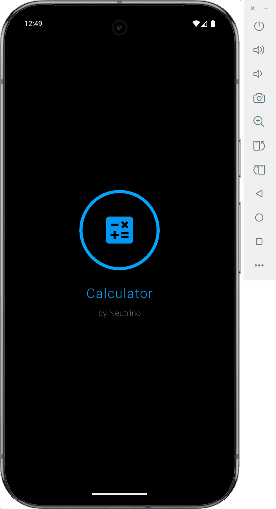

Magic Calculator - Mobile Application
Magical calculator app that always returns the same result, no matter what you enter — a mind-bending trick tool!
Dart
Flutter
Magical calculator app that always returns the same result, no matter what you enter — a mind-bending trick tool!
Magic Calculator looks and behaves like a fully working dark-mode calculator — basic arithmetic, percentages, sign changes, an animated splash screen — until its hidden secret mode is switched on. From that point, pressing equals stops evaluating the expression and returns the number the performer chose in advance, whatever the spectator typed.
Secret mode is toggled by a long press on a small, unobtrusive icon, which swaps between two glyphs so the performer has a discreet confirmation of the mode without giving it away. The predicted number is set from a hidden dialog and remembered between sessions.
Outside the trick it is a genuinely complete calculator: it evaluates real expressions, shows a running display that adapts its font size to the screen and formats very large or very small results so they never overflow.
Buttons lighten and lose their shadow when pressed for a tactile feel, a context-sensitive backspace appears while typing, and a second operator replaces the first instead of being appended. Button sizes and fonts are computed from the screen width, so the same layout adapts from small phones to tablets.

A single-screen Flutter app. Expressions are parsed with a maths-expression library, the secret number is stored on the device, and a small native Android component detects the navigation mode to pick the right system overlay.
Implements the calculator state machine as a single StatefulWidget: expression building, operator handling, the secret-mode switch, number formatting for scientific notation, and the splash-screen animation timeline, all with plain dart:async and no external state-management package.
Renders the responsive button grid and display with Row/Column/ FittedBox, drives the splash-screen ring, fade and color transitions with AnimationController/Tween/CurvedAnimation, and handles button press feedback and long-press gestures with custom GestureDetector-based button widgets.
Parses the typed arithmetic string into an expression tree and evaluates it in real mode whenever secret mode is off, powering the calculator's actual math.
Persists the configurable secret number to local device storage, so the value set through the hidden dialog survives across app restarts.